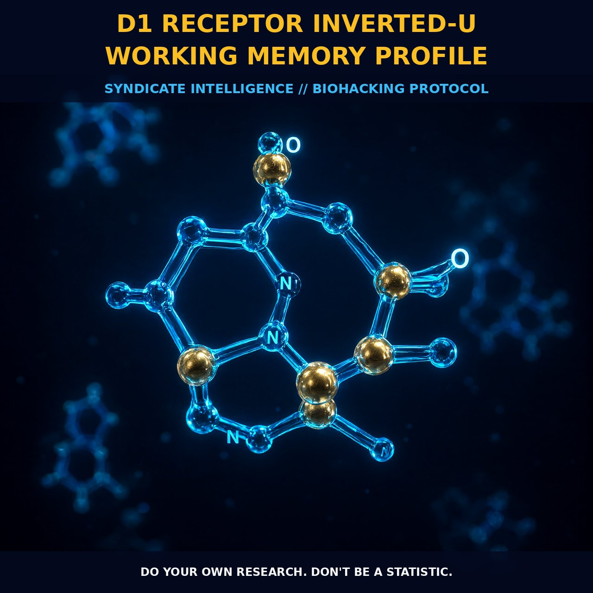

D1 Receptor Dynamics: Mastering the Inverted-U Curve for

1. The Biophysics of Prefrontal Signal Transduction
The prefrontal cortex operates as a precision instrument, governed by an inverted-U curve where dopamine D1 receptor activation dictates the efficiency of working memory and executive function. This dynamic is not linear; rather, it is defined by the specific binding affinity of dopamine at D1 receptors, which modulates the excitability of prefrontal neurons during delay periods. When dopaminergic tone is insufficient, signal transmission weakens, leading to poor maintenance of information. Conversely, excessive stimulation causes neural noise to overwhelm relevant signals, degrading overall cognitive performance.
This process relies on the mesocortical pathway as the primary conduit for modulation, with stochastic dynamics ensuring robustness even when external inputs fluctuate. Working memory is thus revealed not as a static storage unit, but as a dynamic network connectivity system. Its integrity depends on the balanced interplay between dopamine, noradrenaline, and acetylcholine. Disruptions in this triad impair the prefrontal brain's dynamic connectivity, precipitating the cognitive deficits often observed in aging or neurodevelopmental conditions.
The D1 receptor profile serves as the gatekeeper for synaptic plasticity thresholds, allowing neurons to strengthen connections during focused attention while filtering out irrelevant stimuli through inhibitory control. When this balance tips outside the optimal window—whether by deficit or excess—the ability to maintain and update critical information suffers significantly, leading to reduced processing speed and increased mental fatigue.
2. Anatomical Distribution and Sexual Dimorphism
Understanding the anatomical distribution of D1 receptors reveals why cognitive tasks activate distinct brain regions based on individual physiology. Working memory tasks involving verbal functions and object retention predominantly activate the left cerebral cortex, whereas spatial coordination leans heavily on the right parietal areas. This lateralization suggests that optimizing D1 receptor tone must account for specific regional activations to achieve peak cognitive output.
Furthermore, significant sexual dimorphism exists in this neural architecture. Comprehensive meta-analyses indicate that in women, working memory engages limbic structures, such as the hippocampus, alongside prefrontal areas more significantly than in men, who demonstrate greater activation in parietal regions. This biological distinction underscores the necessity of personalized approaches to cognitive optimization.
Genetic factors further constrain working memory capacity, particularly through polymorphisms in genes like CACNA1C. These variants regulate L-type calcium channels involved in converting electrical activity into biochemical events. Impaired CACNA1C variants are associated with deficits in working memory and learning, highlighting the critical role of calcium dynamics in supporting D1 receptor-mediated plasticity. By modulating these upstream inputs, we can stabilize the prefrontal environment against cognitive noise.
3. Protocol Implementation: Upregulation and Stacking
To leverage this inverted-U profile effectively, you must target the upregulation of dopamine D1 receptors in the prefrontal cortex and temporal lobe through consistent cognitive training. Deliberate working memory exercises have been shown to increase the number of available D1 receptors, effectively raising the ceiling of your cognitive capacity over time. This structural adaptation allows the brain to utilize dopamine more efficiently, maintaining higher levels of focus without requiring excessive neurotransmitter release.
Strategic stacking is essential for this protocol. Prioritize compounds that support the broader cholinergic and noradrenergic systems, as these interact directly with dopamine to shape executive function. Since acetylcholine and noradrenaline are crucial for working memory function, their levels must be balanced alongside dopamine to prevent impairments associated with production imbalances. While specific D1 agonist dosing remains under investigation, lifestyle interventions such as aerobic exercise and targeted nutrient intake provide a reliable foundation for dynamic network connectivity.
Timing your high-demand cognitive work when dopaminergic tone is naturally elevated can further optimize receptor availability for tasks requiring intense verbal or spatial processing. Monitor your response to cognitive load carefully; the goal is to remain within the optimal range of the inverted-U curve where signal strength peaks, avoiding both receptor desensitization and excessive neural noise.
Prostar Life Hack
Optimize Your D1 Inverted-U: To prevent cognitive overload, align your peak intellectual work with natural dopamine spikes. Avoid over-supplementing dopamine precursors if you exhibit signs of 'noise' (restlessness, scattered attention); instead, focus on receptor upregulation through high-intensity aerobic exercise and deliberate memory drills. This raises your cognitive ceiling, allowing you to sustain focus longer without needing higher neurotransmitter concentrations.
Prostar Life Hack
Optimize Your D1 Inverted-U: To prevent cognitive overload, align your peak intellectual work with natural dopamine spikes. Avoid over-supplementing dopamine precursors if you exhibit signs of 'noise' (restlessness, scattered attention); instead, focus on receptor upregulation through high-intensity aerobic exercise and deliberate memory drills. This raises your cognitive ceiling, allowing you to sustain focus longer without needing higher neurotransmitter concentrations.
[ AUTHOR: LEAD TECHNICAL RESEARCHER ]